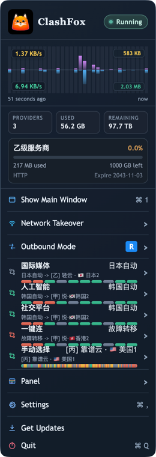
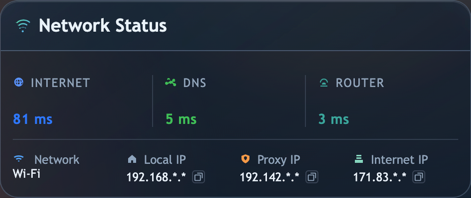
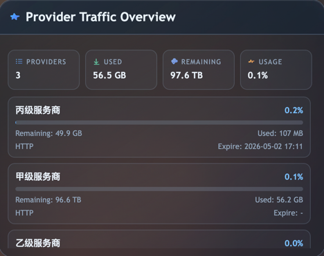
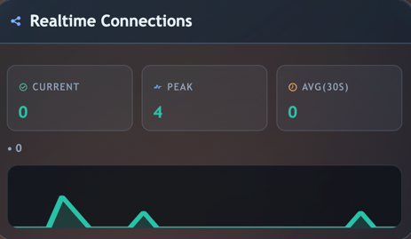
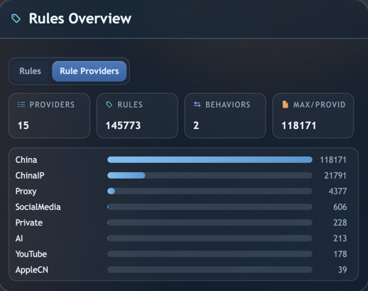
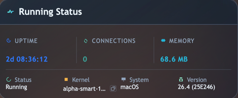
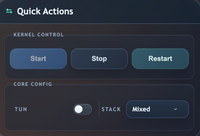
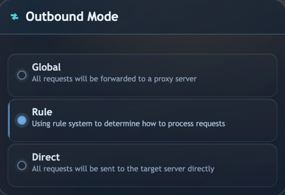
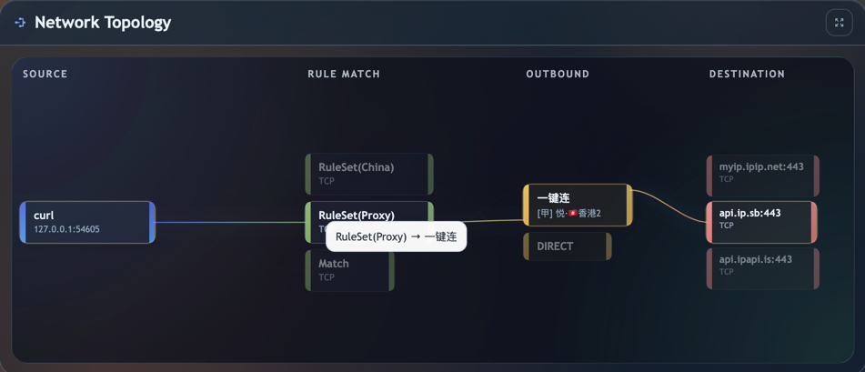

ClashFox v0.5.9
Native Proxy GUI for Mihomo
Make kernel management a lot of fun! A powerful Electron GUI for managing your Mihomo proxy configuration with style and ease.

Overview Components
Explore the key functional areas of ClashFox's interface








Powerful Features
Everything you need to manage your Mihomo proxy configuration efficiently
Fast & Lightweight
Built with Electron for cross-platform support while maintaining excellent performance and responsiveness for smooth user experience.
Modern UI Design
Beautiful, intuitive interface with dark theme support, smooth animations, and thoughtful micro-interactions.
Easy Configuration
Simplified configuration management for Mihomo with a user-friendly interface and helpful configuration tools.
Real-time Monitoring
Track your proxy traffic, connections, and performance metrics in real-time with detailed and informative dashboards.
Secure & Private
Your configuration stays local. No data is sent to external servers, ensuring complete privacy and data control.
macOS Native
Deep integration with macOS including LaunchDaemon helper for seamless system-level proxy management and automation.
App Screenshots
Take a peek at ClashFox's beautiful interface


Quick Installation
Get ClashFox up and running in minutes
Download
Download the latest version from GitHub Releases for your platform (macOS)
Install Mihomo
Mihomo kernel needs to be installed separately. ClashFox does not bundle the kernel.
Configure
Launch ClashFox and configure your proxy subscription or local config file.
Start Using
Enjoy seamless proxy management with ClashFox's intuitive interface!
Frequently Asked Questions
Common questions about ClashFox and Mihomo
How do I resolve kernel conflict issues?
If you're experiencing conflicts, make sure you don't have other Mihomo-based applications running simultaneously (like ClashX Pro or Surge). Each application needs its own Mihomo instance. Close other proxy apps before starting ClashFox.
Does ClashFox support proxy subscription links?
Yes! ClashFox supports importing proxy configurations via subscription URLs. Go to Configuration > Import from URL and paste your subscription link. ClashFox will automatically fetch and update your proxy list.
Where are configurations, logs, and kernel stored?
The runtime root directory is located at ~/Library/Application Support/ClashFox.
- data/ — User configuration files and subscription import results
- logs/ — Runtime logs and troubleshooting output (can be cleaned up after troubleshooting)
- core/ — Mihomo kernel binary file
What should I do when macOS shows "App is damaged" or "Cannot verify developer"?
This is typically the default Gatekeeper blocking behavior for unnotarized apps, not a ClashFox-specific issue.
- Move the app to
/Applications/ClashFox.app - Open System Settings → Privacy & Security and click "Still Open"
- If still blocked, run:
sudo xattr -r -d com.apple.quarantine /Applications/ClashFox.app